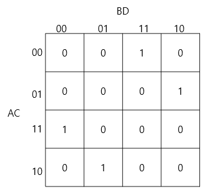
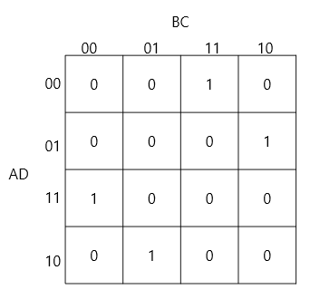

생성형 AI가 지식 생산의 주요 도구로 부상한 현재, 인간 연구자의 역할—특히 구조를 인식하고 연구 질문을 만드는 일—을 다시 살펴볼 필요가 생겼다.
본 논문은 구조 인식 이론(SRT)과 인간-AI 연구 연속성 이론(HARCT)을 제안하여, 생성형 AI 시대 인간 연구자의 역할로 거론되는
유의성 판단과 목표 보존을 가설로 정리한다.
카르노맵 대칭 분류 프로젝트에 대한 단일 사례 연구(n=1)로 틀의 적용 가능성을 탐색하고, 사례에서 드러난 오류 전파의 위험을 반영하여 독립 검증 단계를 추가한다(이 논문의 점검에도 같은 계열 AI가 쓰여 완전한 독립 검증은 아니다).
SRT의 10개 가설(H1–H10)은 아직 실증되지 않았으며, 일부 가설에 대한 검증 가능한 예측과 교육 파일럿 설계를 제시한다.
구성:SRT 이론HARCT 이론사례 연구 (n=1)교육 파일럿 설계
🧠 SRT 핵심 가설 H1–H10
H1
인간은 구조 발견에서 비교우위를 가질 수 있다 (능력이 아니라 역할의 차이)
H2
어려운 문제는 표상을 바꿈으로써 다루기 쉬워질 수 있다
H3
조사 이전에 주의 필터가 작동한다 (통과 기준은 열린 문제)
H4
구조의 조사 가치를 평가하는 유의성 필터 (압축성·예측력·일반화력·설명 견인력)
H5
설명을 찾기 전에 설명이 있으리라 예상한다
H6
연구는 구조의 설명적 잠재력 감지에서 시작된다
H7
핵심 우위는 설명적 유의성을 평가하는 능력일 수 있다 (H1의 성숙판)
H8
개념은 관찰의 렌즈(lens)로 작동한다
H9
연구가 개념을 낳고, 개념이 확장된 지각으로 새 연구를 낳는다
H10
개념마다 생성력이 다르다
모든 가설은 탐색적이며 아직 실증되지 않았다.
H3~H9는 형식 정의 3.1~3.3의 조건과 연결된다: H3은 정의 3.2의 조건 4(기준 불투명성), H4·H5·H6·H7은 정의 3.3, H8·H9는 정의 3.1의 조건 1(전체적 인식). 연결 표는 논문 3.4절에 있다.
🖼️ 그림 (사례의 수학적 배경, 3.1절)
그림 1 (왼쪽). 4변수 XOR, Gray 축 순서: 체커보드.그림 1 (오른쪽). 같은 함수, 이진 축 순서: 이중대각. 모양의 차이는 축 라벨 순서에서 온다.그림 2. 칸별 해밍 레이어(L1~L5는 1의 개수 0~4).
그림 3. (A⊕B)(C⊕D), 배치 AB/CD.

같은 함수, 배치 AC/BD.

같은 함수, 배치 AD/BC (AC/BD와 같은 그림).
그림은 자매 논문(Paper 7)의 그림 파일을 그대로 복사한 것이다(images/README.md).
🔗 HARCT의 주요 구성요소 (제안·가설)
① 목표 보존
Goal Preservation
정보가 보존되어도 목표가 사라지면 연구는 방향을 잃는다는 저자의 인상에서 제안한 구성요소. 사례(4.7절)가 이를 직접 뒷받침하지는 않는다.
② 삼요소 아키텍처
Three-Component Architecture
인간의 목표 기억, AI의 추론 능력, 산출물 기억이 상호작용할 때 연속성이 나타난다.
③ 재구성 비용
Reconstruction Cost
문서화 품질이 맥락 복구에 드는 노력을 좌우한다는 가설. 제안한 지표는 검증되지 않았다.
④ 분산 연구 기억
Distributed Research Memory
저장소(HANDOVER, CHANGELOG, TODO, 논문 원고)를 인간과 AI가 공유하는 외재화된 작업 기억으로 쓴다.
⚖️ 역할 분담 가설 (H1, 4.4절)
👤 인간 연구자
▸ 유의성 판단과 의미 부여 (H4, H7)
▸ 장기 목표 기억의 보존
▸ 이상함의 감지와 문제 제기
▸ 논리 정합성 검토, 비약 감지
🤖 생성형 AI
▸ 계산, 증명 초안, 형식화
▸ 세션 사이 맥락이 휘발되어 산출물에 의존
▸ 그럴듯한 오류 가능, 독립 검증 필요
▸ 원고 작성, 수식 렌더링, 포털 구현
가설이며 실증되지 않았다. 전체 능력의 우열이 아니라 역할의 차이를 가정한다. 이 표는 이론이 제안하는 분업이며, 사례의 실제 분담(예: 가설 생성)과 다른 부분이 있다.
🔄 연구 순환 모델 (SRT × HARCT)
SRT: 6단계 인지 흐름 (3.2절)
Pattern
→
Attention
→
Structure
→
Meaning ★
→
Question
→
Research
HARCT: 핸드오버 프로토콜 (4.3절)
Context Ingestion
→
Goal Synchronization
→
Execution & Dual Commit
→
State Sealing
결합: 공생적 연구 순환 (5.1절)
직관 → 형식화
→
연역·계산 → 검토
→
독립 검증 ★ (추가)
→
가치 부여 → 확장
→
체계화 → 기억 저장
🎓 교육적 함의
기존 방향
최소화 절차 → 최소 논리식 도출 (결과 중심)
↓
제안 방향
구조 인식 과정 → "왜 이 패턴인가?" 질문 (사고 과정 중심)
문제 제기 활동 / 메타인지적 검증 훈련(AI의 답에서 오류를 찾고 독립적으로 확인) / 구조적 사고 훈련 / 과정의 평가와 교사 역할의 변화. 초심자에게는 명시적 안내를 함께 둔다. 이 제안은 입증되지 않았으며 6.4절의 파일럿으로 검증해야 한다.
📋 인용 / Citation
@misc{choi2026srtharct,
title = {Structural Thinking and Human-AI Research Collaboration in the Generative AI Era},
author = {Choi, Jonghun},
year = {2026},
note = {Framework proposal: SRT and HARCT, a single-case study, and educational implications.},
url = {https://github.com/inha20/8StructuralThinkingAndHumanAICollaboration}
}